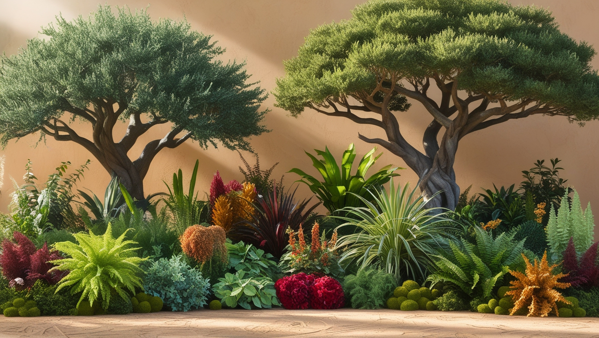
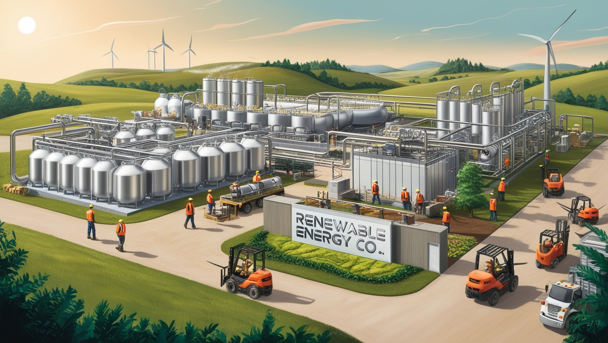

O agronegócio é o conjunto de atividades econômicas que estão conectadas ao comércio e a produção agrícola. È um dos pilares mais importantes da economia brasileira
A sigla Agro pode ser referido a Agropecuária, Agricultura, e a engenharia, entre muitas outras. Elas formam inovações e soluções no ambiente rural.
Porém, em virtude da expansão da agropecuária e da utilização de métodos para o cultivo e criação de animais. vários problemas ambientais estão sendo desencadeados.
O desmatamento é uma prática muito utilizada nesse âmbito. A remoção da cobertura vegetal acarreta na redução da biodiversidade, erosão, extinção de espécies animais e vegetais, e contribui para o aquecimento global, entre muitos outros danos.
Por isso, é importante darmos ênfase em formas mais tecnológicas para a preservação e a melhoria do meio ambiente.
|  | Esse método foi criado por Ernst Götsch, tendo como objetivo principal a restauração da natureza, usando no mesmo ambiente um sistema de junta, ou seja, a criação de frutas, madeiras e hortaliças no mesmo local. Isso ajuda na restauração de araes degradáveis e a preserva o meio ambiente. |
|  | Criado por Henry Ford, tem como finalidade a neutralização da captura de carbono e reduz as emissões de gases do efeito estufa. Os biocombustíveis são considerados fontes de energias renováveis, que se originam de frutas, vegetais e sementes. Podem ser usados na criação de eletricidade e para o abastecimentos de veículos como o biodiesel e o etanol. |